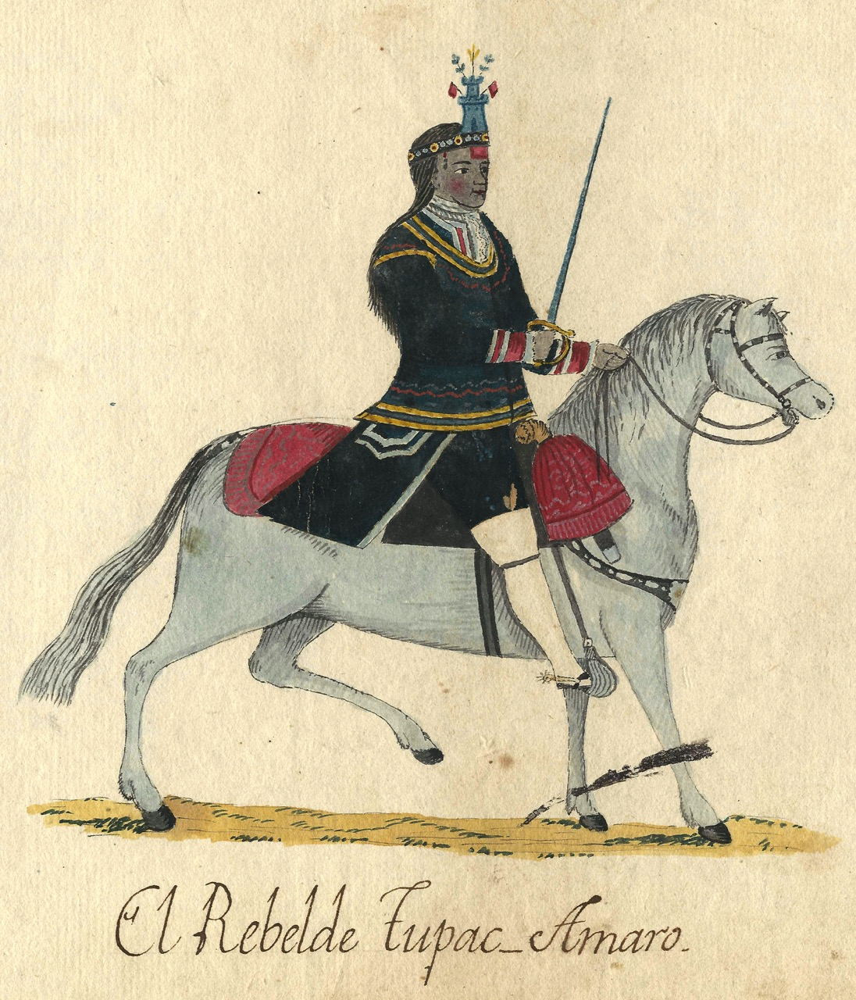

Antisuyu
The Eastern tropics
The Eastern tropics
Willkapampa (Sacred Plains) was a state established after the fall of the larger Inkan empire and lead by Tupac Amaru. It lasted about 40 years before Tupac Amaru's murder effectively ended any politcal Inkan authority in the region.
Willkapampa is often called the Lost City of the Inkas which often obscures the very real hand that European settlers had in the fact that it is no longer inhabited.
Another modern name is Espiritu Pampa which means Spirit of the Plains.
By I, AgainErick, CC BY-SA 3.0, Link
Prior to Willkapampa being established as the last stand of the Inkans, the dense tropics of this region made it so that the area was full of tribes that successfully resisted any Inkan attempts at conquering the region.
Groups of people who continue to inhabit the area include:
A note is that you may hear the word Ch'unchu used but this is a derogatory term and should be avoided.
Tupaq Amaru (Translated to "Royal/Shining" and "Snake") was the last Sapa Inka (Monarch of the Inkan Empire) of the Willkapampa, ascending to the title after his brother died from illness in 1571 and having it for one year until his murder at the hands of Spanish invaders led by Viceroy Toledo.
His capture and execution was criticized by local Indigenous people, Catholic clerics and even King of Spain, Philip II who all felt Tupac Amaru was innocent and that the killing of Spanish ambassadors was being used as an excuse to finally collapse the Inkan state.
Prior to his death, Tupaq raised his hand to silence the crowd and uttered: "Ccollanan Pachacamac ricuy auccacunac yawarniy hichascancuta." (Pacha Kamaq, witness how my enemies shed my blood.) Despite his short reign, Tupac holds a strong memory in the Andes inspiring future Andean rebels like Jose Gabriel Condorcanqui who would change his own name to Tupac Amaru II.
Tupac Amaru II
Congrats on learning about this region! Keep learning about the others!
Antasuyu
Chinchansuyu
Qullasuyu